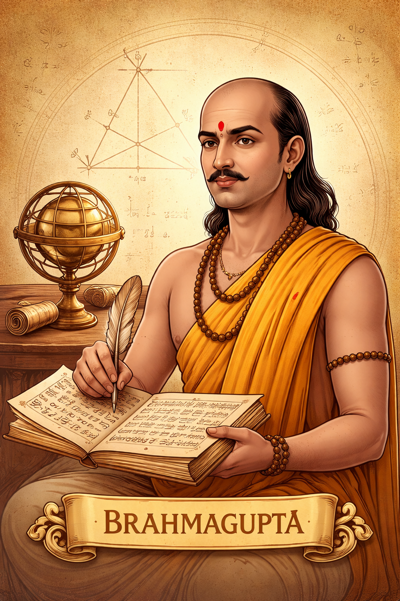

- Brahmasphutasiddhanta: His major work, written in 628 AD, is the first to treat Zero as a number in its own right.
- Rules for Zero: He defined that n + 0 = n, n - 0 = n, and n \times 0 = 0. (He also attempted n / 0, though modern math refined this later).
- Negative Numbers: He introduced "debts" (negative numbers) and "fortunes" (positive numbers) and gave rules for their multiplication.
- Multiplication Rules: He stated that a negative times a negative is a positive, and a negative times a positive is a negative.
- Brahmagupta’s Formula: A brilliant formula for the area of a cyclic quadrilateral: Area = \sqrt{(s-a)(s-b)(s-c)(s-d)}.
- Quadratic Equations: He provided the first clear method to solve the general quadratic equation ax^2 + bx + c = 0.
- Pell’s Equation: He solved nx^2 + 1 = y^2 using his "Bhavana" method, centuries before European mathematicians.
- Gravity: He stated that "Bodies fall towards the earth as it is in the nature of the earth to attract bodies," anticipating Newton.
- Interpolation: He used a method equivalent to Newton-Stirling interpolation to calculate values of sines.
- Integer Solutions: He was obsessed with finding integer solutions for complex algebraic problems.
- Earth’s Circumference: He refined Aryabhatta’s calculations, arriving at a value very close to the actual 40,000 km.
- Astronomy Algorithms: He provided methods for calculating the positions of planets and the timing of eclipses.
- The Khhandakhadyaka: A practical handbook for astronomical calculations used by students for centuries.
- Pythagorean Triples: He provided a rule for generating Pythagorean triples (sets of three integers that fit a^2 + b^2 = c^2).
- Cyclic Quadrilaterals: He was the first to discover that the diagonals of a cyclic quadrilateral are perpendicular if its sides are certain integers.
- Zero as a Digit: He solidified the use of zero in the decimal system, which eventually reached Europe via the Arabs.
- Division by Fractions: He established the rule for dividing a number by a fraction—by multiplying by its reciprocal.
- Sine Tables: He improved upon existing sine tables with higher precision.
- Criticism and Logic: He was known for being a rigorous critic, often pointing out errors in previous works to ensure mathematical accuracy.
- Global Influence: His works were translated into Arabic in Baghdad, introducing Indian mathematics to the Islamic world and eventually the West.
- Computational Speed: His methods were designed to be "Siddhanta"—conclusions that allowed for rapid calculation of cosmic events.
